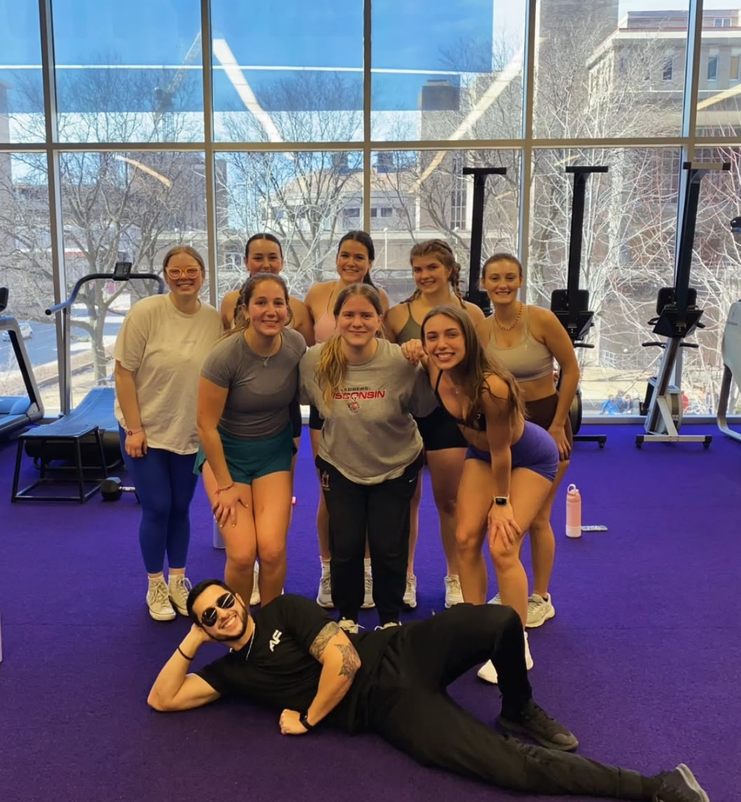

Campus Involvement
Luckily, at UW-Madison, there are plenty of opprotunities to get involved on campus and find groups of people who enjoy fitness. Joining a club is a great way to not only meet people with similar goals, but to learn more about fitness and stay motivated.
Girl Gains is one of the clubs I am involved in at UW-Madison. This club promotes female weight lifting, as gyms tend to be male domninated. It empowers women throught fitness by teaching nutrition and fitness advice at bi-weekly meetings. Additionally, the club holds many socials throughout the semester for various workouts such as classes, yoga, and zumba. Executive members and designated Small Group Workout leaders host Small Group Workouts, which are great opprotunities for new gym goers to learn new workouts and gain advice in a small group setting. It is also a great way to stay accountable with your workouts. I host small group workouts every other Friday at noon at The Nick for a leg workout. Girl Gains is free to join, and members can join anytime.
Follow Our Instagram to learn more about our upcoming events!